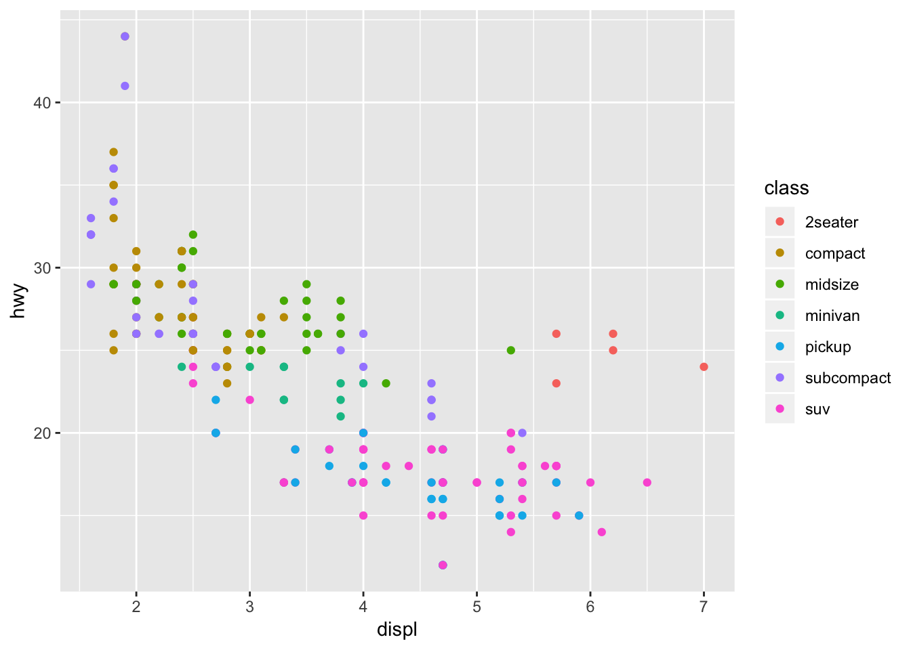

Chapter 3 Data transformation
“Up to 80% of data analysis is spent on the process of cleaning and preparing data.”
— cf. Wickham, 2014 and Dasu & Johnson, 2003
In this chapter, we go over things you need to do before you visualise your data. In practice, it is rare that you are handed off clean data which are perfectly structured and ready for you to visualise the data. More often than not, you find yourself spending more time collecting, cleaning and wrangling data in data visualisation projects. Thus, getting efficient at data preparation is an important skill set for data visualisation.
3.1 Importing data
For importing tabular data, we will use readr packcage, which is included in tidyverse for a couple of reasons. 1) It is much faster than base R function such as read.csv(). 2) It loads as tibbles instead of R’s traditional data.frame. Tibbles are data frames and for our purpose, there is no critical difference, and you can consider tibbles as “updated” version of data.frame which is more user friendly.
# Load tidyverse package
library(tidyverse)3.1.1 Delimited text data file
| Function | Description |
|---|---|
read_csv() |
comma separated (csv) files |
read_tsv() |
tab seaparated files |
read_delim() |
general delimited files |
read_fwf() |
fixed width files |
read_table() |
tabular files where columns are separated by white-space |
car_data <- read_csv(file = "data/mtcars.csv")## Parsed with column specification:
## cols(
## mpg = col_double(),
## cyl = col_integer(),
## disp = col_double(),
## hp = col_integer(),
## drat = col_double(),
## wt = col_double(),
## qsec = col_double(),
## vs = col_integer(),
## am = col_integer(),
## gear = col_integer(),
## carb = col_integer()
## )Note that readr function rpints the column specification. This output is useful to check that columns have been read in as you would expect. If they have not, you can copy-paste and edit into a new call.
car_cata <- read_csv(file = "data/mtcars.csv", col_types =
cols(
mpg = col_double(),
cyl = col_integer(),
disp = col_double(),
hp = col_integer(),
drat = col_double(),
vs = col_integer(),
wt = col_double(),
qsec = col_double(),
am = col_integer(),
gear = col_integer(),
carb = col_integer()
)
)Besides col_integer() and col_double(), there are also col_logical() and col_character(). Read the documentation for more details.
3.1.2 Data from an excel file
To load .xls or .xlsx files, use read_excel() function in the readxl package. With this function, you can specify the sheet of an Excel spreadsheet. Read the documentaiton for more details.
# install the package for the first time
install.packages("readxl")
library(readxl)
# Loading the first sheet of an Excel file
data <- read_excel("sample.xlsx", 1)3.1.3 Data from SPSS/SAS/Stata files
The haven packages include functions for reading data from SPSS/SAS/Stata files.
| Function | Description |
|---|---|
read_sav() |
reading SPSS files |
read_sas() |
reading SAS files |
read_dta() |
reading Stata files |
3.2 Data transformation
For data transformation, we will use the dplyr package, which is also a part of tidyverse. The dplyr is a powerful R package to manipulate, clean and summarise unstructure data, which is user friendly and often much faster than base R functions.
3.2.1 Core verbs in dplyr
If you are familiar with SQL, there are some similarities in the name of functions defined in dplyr. The table below contains core functions in dplyr, which you will be very familiar with. Also the cheatsheet from RStudio is very handy.
| Function | Description | Equivalent SQL |
|---|---|---|
select() |
selecting columns | SELECT |
filter() |
filtering rows / subsetting | WHERE |
group_by() |
grouping data | GROUP BY |
summarise() |
summarising / aggregating data | - |
arrange() |
sorting data | ORDER BY |
join() |
joining data tables | JOIN |
mutate() |
creating new columns | COLUMN ALIAS |
All functions work similarly: * The first argument is a data frame * Subsequent arguments describe what to do * Output is a new data frame
3.2.2 Chaining function with the pipe operator
The key player in dplyr is %>% (called the pipe operator). It is important to understand the pipe oerator because it allows you to pass the result to another function and another… in a way that is easy to read.
You will be using this pipe operator quite often, so it is good to memorise its keyboard shortcuts in RStudio. Command + Shift + M (for Mac). CTRL + Shift + M (for Windows)
# without pipe to subset "suv" cars
filter(mpg, class == "suv")
# equivalent form with pipe
mpg %>% filter(class == "suv")3.2.3 Tutorial
Chapter 5 : Data transformation(Wickham and Grolemund 2016) from R for Data Science book is excellent for learning dplyr. Go to the ebook and read through Chapter 5 and complete following exercises:
- 5.2.4
- 5.3.1
- 5.4.1
- 5.5.2
- 5.6.7
- 5.7.1
3.2.4 Dates and times
Chapter 16 in (Wickham and Grolemund 2016)(https://r4ds.had.co.nz/dates-and-times.html) covers how to handle dates and times using the lubridate package. Read through Chapter 16 and complete following exercises:
- 16.2.4
- 16.3.4
- 16.4.5
3.3 Tidy data
In data analysis (espcially with tidyverse) in R, tidy data is a particular data structure recommended. There are 3 rules which make a dataset tidy:
- Each variable must have its own column
- Each observation must have its own row
- Each value must have its own cell
This data structure may not be the easiest table to read, or most efficient table structure for storage, however it works well with tools provided by the packages in the tidyverse, beyond data visualisation. It will require some upfront work, but that work pays off in the long run.
Which table shown below is tidy data?
Table 1| country | year | cases | population |
|---|---|---|---|
| Afghanistan | 1999 | 745 | 19987071 |
| Afghanistan | 2000 | 2666 | 20595360 |
| Brazil | 1999 | 37737 | 172006362 |
| Brazil | 2000 | 80488 | 174504898 |
| China | 1999 | 212258 | 1272915272 |
| China | 2000 | 213766 | 1280428583 |
| country | year | type | count |
|---|---|---|---|
| Afghanistan | 1999 | cases | 745 |
| Afghanistan | 1999 | population | 19987071 |
| Afghanistan | 2000 | cases | 2666 |
| Afghanistan | 2000 | population | 20595360 |
| Brazil | 1999 | cases | 37737 |
| Brazil | 1999 | population | 172006362 |
| Brazil | 2000 | cases | 80488 |
| Brazil | 2000 | population | 174504898 |
| China | 1999 | cases | 212258 |
| China | 1999 | population | 1272915272 |
| China | 2000 | cases | 213766 |
| China | 2000 | population | 1280428583 |
| country | year | rate |
|---|---|---|
| Afghanistan | 1999 | 745/19987071 |
| Afghanistan | 2000 | 2666/20595360 |
| Brazil | 1999 | 37737/172006362 |
| Brazil | 2000 | 80488/174504898 |
| China | 1999 | 212258/1272915272 |
| China | 2000 | 213766/1280428583 |
Answer: only Table 1 is tidy.
Here is an example of data visualisation using Table 1, which works nicely and concisely.
ggplot(table1, aes(year, cases)) +
geom_line(aes(group = country), colour = "grey50") +
geom_point(aes(colour = country))
However, in reality, the data is not always tidy. We will cover 4 key function to tidy the data.
3.3.1 gather()
Gathering multiple columns into one is useful when each row represents more than one observations. Suppose the table you have is as shown below, and you want to restructure to tidy so that it becomes like Table 1.
| country | 1999 | 2000 |
|---|---|---|
| Afghanistan | 745 | 2666 |
| Brazil | 37737 | 80488 |
| China | 212258 | 213766 |
To achieve this, you use gather() function as follows:
(tidy_4a <- table4a %>%
gather(key = "year", value = "cases", `1999`, `2000`))## # A tibble: 6 x 3
## country year cases
## <chr> <chr> <int>
## 1 Afghanistan 1999 745
## 2 Brazil 1999 37737
## 3 China 1999 212258
## 4 Afghanistan 2000 2666
## 5 Brazil 2000 80488
## 6 China 2000 213766gather
3.3.2 spread()
Spreading is the oposite of gathering. The below shows reversing the previous gathering. This is not very useful as the output is not tidy anymore.
tidy_4a %>%
spread(key = year, value = cases)## # A tibble: 3 x 3
## country `1999` `2000`
## <chr> <int> <int>
## 1 Afghanistan 745 2666
## 2 Brazil 37737 80488
## 3 China 212258 213766Spreading is useful when one observation is scattered across multiple rows. Let’s revisit Table 2. If you see type column, it contains 2 variables (cases and population) which should be in separate columns.
| country | year | type | count |
|---|---|---|---|
| Afghanistan | 1999 | cases | 745 |
| Afghanistan | 1999 | population | 19987071 |
| Afghanistan | 2000 | cases | 2666 |
| Afghanistan | 2000 | population | 20595360 |
| Brazil | 1999 | cases | 37737 |
| Brazil | 1999 | population | 172006362 |
| Brazil | 2000 | cases | 80488 |
| Brazil | 2000 | population | 174504898 |
| China | 1999 | cases | 212258 |
| China | 1999 | population | 1272915272 |
| China | 2000 | cases | 213766 |
| China | 2000 | population | 1280428583 |
To trans form the Table 2, apply spread() function as shown below:
table2 %>%
spread(key = type, value = count)## # A tibble: 6 x 4
## country year cases population
## <chr> <int> <int> <int>
## 1 Afghanistan 1999 745 19987071
## 2 Afghanistan 2000 2666 20595360
## 3 Brazil 1999 37737 172006362
## 4 Brazil 2000 80488 174504898
## 5 China 1999 212258 1272915272
## 6 China 2000 213766 1280428583spread
3.3.3 separate()
separate() function is for splitting one column into mutiple columns to satisfy the third tidy data rule (Each value must have its own cell). Let’s revisit Table 3. The rate column actually consists of case and population values.
| country | year | rate |
|---|---|---|
| Afghanistan | 1999 | 745/19987071 |
| Afghanistan | 2000 | 2666/20595360 |
| Brazil | 1999 | 37737/172006362 |
| Brazil | 2000 | 80488/174504898 |
| China | 1999 | 212258/1272915272 |
| China | 2000 | 213766/1280428583 |
To split the rate column, pass the names of the columns to separate into, and the separator (in our case “/”). Another useful argument is convert = TRUE, to conver the column types to appropriate column types. Without this argument, the output columns will be character columns.
table3 %>%
separate(rate, into = c("cases", "population"), sep="/", convert = TRUE)## # A tibble: 6 x 4
## country year cases population
## * <chr> <int> <int> <int>
## 1 Afghanistan 1999 745 19987071
## 2 Afghanistan 2000 2666 20595360
## 3 Brazil 1999 37737 172006362
## 4 Brazil 2000 80488 174504898
## 5 China 1999 212258 1272915272
## 6 China 2000 213766 1280428583If you pass numeric to sep, it interprets as positions to split at. For example, you can splet the year into century and year.
table3 %>%
separate(year, into = c("century", "year"), sep = 2)## # A tibble: 6 x 4
## country century year rate
## * <chr> <chr> <chr> <chr>
## 1 Afghanistan 19 99 745/19987071
## 2 Afghanistan 20 00 2666/20595360
## 3 Brazil 19 99 37737/172006362
## 4 Brazil 20 00 80488/174504898
## 5 China 19 99 212258/1272915272
## 6 China 20 00 213766/12804285833.3.4 unite()
unite() is the oposite of separate().
| country | century | year | rate |
|---|---|---|---|
| Afghanistan | 19 | 99 | 745/19987071 |
| Afghanistan | 20 | 00 | 2666/20595360 |
| Brazil | 19 | 99 | 37737/172006362 |
| Brazil | 20 | 00 | 80488/174504898 |
| China | 19 | 99 | 212258/1272915272 |
| China | 20 | 00 | 213766/1280428583 |
table5 %>%
unite(new, century, year, sep = "")## # A tibble: 6 x 3
## country new rate
## <chr> <chr> <chr>
## 1 Afghanistan 1999 745/19987071
## 2 Afghanistan 2000 2666/20595360
## 3 Brazil 1999 37737/172006362
## 4 Brazil 2000 80488/174504898
## 5 China 1999 212258/1272915272
## 6 China 2000 213766/12804285833.3.5 Exercise
Let’s apply what you have learned in this chapter to this tidyr::who dataset. This dataset consists of TB cases broken down by year, country, age, gender, and diagnosis method.
Take a closer look at the data by running tidyr::who %>% View() and also checking its documentation ?tidyr::who.
| country | iso2 | iso3 | year | new_sp_m014 | new_sp_m1524 | new_sp_m2534 | new_sp_m3544 | new_sp_m4554 | new_sp_m5564 | new_sp_m65 | new_sp_f014 | new_sp_f1524 | new_sp_f2534 | new_sp_f3544 | new_sp_f4554 | new_sp_f5564 | new_sp_f65 | new_sn_m014 | new_sn_m1524 | new_sn_m2534 | new_sn_m3544 | new_sn_m4554 | new_sn_m5564 | new_sn_m65 | new_sn_f014 | new_sn_f1524 | new_sn_f2534 | new_sn_f3544 | new_sn_f4554 | new_sn_f5564 | new_sn_f65 | new_ep_m014 | new_ep_m1524 | new_ep_m2534 | new_ep_m3544 | new_ep_m4554 | new_ep_m5564 | new_ep_m65 | new_ep_f014 | new_ep_f1524 | new_ep_f2534 | new_ep_f3544 | new_ep_f4554 | new_ep_f5564 | new_ep_f65 | newrel_m014 | newrel_m1524 | newrel_m2534 | newrel_m3544 | newrel_m4554 | newrel_m5564 | newrel_m65 | newrel_f014 | newrel_f1524 | newrel_f2534 | newrel_f3544 | newrel_f4554 | newrel_f5564 | newrel_f65 |
|---|---|---|---|---|---|---|---|---|---|---|---|---|---|---|---|---|---|---|---|---|---|---|---|---|---|---|---|---|---|---|---|---|---|---|---|---|---|---|---|---|---|---|---|---|---|---|---|---|---|---|---|---|---|---|---|---|---|---|---|
| Afghanistan | AF | AFG | 1980 | NA | NA | NA | NA | NA | NA | NA | NA | NA | NA | NA | NA | NA | NA | NA | NA | NA | NA | NA | NA | NA | NA | NA | NA | NA | NA | NA | NA | NA | NA | NA | NA | NA | NA | NA | NA | NA | NA | NA | NA | NA | NA | NA | NA | NA | NA | NA | NA | NA | NA | NA | NA | NA | NA | NA | NA |
| Afghanistan | AF | AFG | 1981 | NA | NA | NA | NA | NA | NA | NA | NA | NA | NA | NA | NA | NA | NA | NA | NA | NA | NA | NA | NA | NA | NA | NA | NA | NA | NA | NA | NA | NA | NA | NA | NA | NA | NA | NA | NA | NA | NA | NA | NA | NA | NA | NA | NA | NA | NA | NA | NA | NA | NA | NA | NA | NA | NA | NA | NA |
| Afghanistan | AF | AFG | 1982 | NA | NA | NA | NA | NA | NA | NA | NA | NA | NA | NA | NA | NA | NA | NA | NA | NA | NA | NA | NA | NA | NA | NA | NA | NA | NA | NA | NA | NA | NA | NA | NA | NA | NA | NA | NA | NA | NA | NA | NA | NA | NA | NA | NA | NA | NA | NA | NA | NA | NA | NA | NA | NA | NA | NA | NA |
| Afghanistan | AF | AFG | 1983 | NA | NA | NA | NA | NA | NA | NA | NA | NA | NA | NA | NA | NA | NA | NA | NA | NA | NA | NA | NA | NA | NA | NA | NA | NA | NA | NA | NA | NA | NA | NA | NA | NA | NA | NA | NA | NA | NA | NA | NA | NA | NA | NA | NA | NA | NA | NA | NA | NA | NA | NA | NA | NA | NA | NA | NA |
| Afghanistan | AF | AFG | 1984 | NA | NA | NA | NA | NA | NA | NA | NA | NA | NA | NA | NA | NA | NA | NA | NA | NA | NA | NA | NA | NA | NA | NA | NA | NA | NA | NA | NA | NA | NA | NA | NA | NA | NA | NA | NA | NA | NA | NA | NA | NA | NA | NA | NA | NA | NA | NA | NA | NA | NA | NA | NA | NA | NA | NA | NA |
| Afghanistan | AF | AFG | 1985 | NA | NA | NA | NA | NA | NA | NA | NA | NA | NA | NA | NA | NA | NA | NA | NA | NA | NA | NA | NA | NA | NA | NA | NA | NA | NA | NA | NA | NA | NA | NA | NA | NA | NA | NA | NA | NA | NA | NA | NA | NA | NA | NA | NA | NA | NA | NA | NA | NA | NA | NA | NA | NA | NA | NA | NA |
| Afghanistan | AF | AFG | 1986 | NA | NA | NA | NA | NA | NA | NA | NA | NA | NA | NA | NA | NA | NA | NA | NA | NA | NA | NA | NA | NA | NA | NA | NA | NA | NA | NA | NA | NA | NA | NA | NA | NA | NA | NA | NA | NA | NA | NA | NA | NA | NA | NA | NA | NA | NA | NA | NA | NA | NA | NA | NA | NA | NA | NA | NA |
| Afghanistan | AF | AFG | 1987 | NA | NA | NA | NA | NA | NA | NA | NA | NA | NA | NA | NA | NA | NA | NA | NA | NA | NA | NA | NA | NA | NA | NA | NA | NA | NA | NA | NA | NA | NA | NA | NA | NA | NA | NA | NA | NA | NA | NA | NA | NA | NA | NA | NA | NA | NA | NA | NA | NA | NA | NA | NA | NA | NA | NA | NA |
| Afghanistan | AF | AFG | 1988 | NA | NA | NA | NA | NA | NA | NA | NA | NA | NA | NA | NA | NA | NA | NA | NA | NA | NA | NA | NA | NA | NA | NA | NA | NA | NA | NA | NA | NA | NA | NA | NA | NA | NA | NA | NA | NA | NA | NA | NA | NA | NA | NA | NA | NA | NA | NA | NA | NA | NA | NA | NA | NA | NA | NA | NA |
| Afghanistan | AF | AFG | 1989 | NA | NA | NA | NA | NA | NA | NA | NA | NA | NA | NA | NA | NA | NA | NA | NA | NA | NA | NA | NA | NA | NA | NA | NA | NA | NA | NA | NA | NA | NA | NA | NA | NA | NA | NA | NA | NA | NA | NA | NA | NA | NA | NA | NA | NA | NA | NA | NA | NA | NA | NA | NA | NA | NA | NA | NA |
| Afghanistan | AF | AFG | 1990 | NA | NA | NA | NA | NA | NA | NA | NA | NA | NA | NA | NA | NA | NA | NA | NA | NA | NA | NA | NA | NA | NA | NA | NA | NA | NA | NA | NA | NA | NA | NA | NA | NA | NA | NA | NA | NA | NA | NA | NA | NA | NA | NA | NA | NA | NA | NA | NA | NA | NA | NA | NA | NA | NA | NA | NA |
| Afghanistan | AF | AFG | 1991 | NA | NA | NA | NA | NA | NA | NA | NA | NA | NA | NA | NA | NA | NA | NA | NA | NA | NA | NA | NA | NA | NA | NA | NA | NA | NA | NA | NA | NA | NA | NA | NA | NA | NA | NA | NA | NA | NA | NA | NA | NA | NA | NA | NA | NA | NA | NA | NA | NA | NA | NA | NA | NA | NA | NA | NA |
| Afghanistan | AF | AFG | 1992 | NA | NA | NA | NA | NA | NA | NA | NA | NA | NA | NA | NA | NA | NA | NA | NA | NA | NA | NA | NA | NA | NA | NA | NA | NA | NA | NA | NA | NA | NA | NA | NA | NA | NA | NA | NA | NA | NA | NA | NA | NA | NA | NA | NA | NA | NA | NA | NA | NA | NA | NA | NA | NA | NA | NA | NA |
| Afghanistan | AF | AFG | 1993 | NA | NA | NA | NA | NA | NA | NA | NA | NA | NA | NA | NA | NA | NA | NA | NA | NA | NA | NA | NA | NA | NA | NA | NA | NA | NA | NA | NA | NA | NA | NA | NA | NA | NA | NA | NA | NA | NA | NA | NA | NA | NA | NA | NA | NA | NA | NA | NA | NA | NA | NA | NA | NA | NA | NA | NA |
| Afghanistan | AF | AFG | 1994 | NA | NA | NA | NA | NA | NA | NA | NA | NA | NA | NA | NA | NA | NA | NA | NA | NA | NA | NA | NA | NA | NA | NA | NA | NA | NA | NA | NA | NA | NA | NA | NA | NA | NA | NA | NA | NA | NA | NA | NA | NA | NA | NA | NA | NA | NA | NA | NA | NA | NA | NA | NA | NA | NA | NA | NA |
| Afghanistan | AF | AFG | 1995 | NA | NA | NA | NA | NA | NA | NA | NA | NA | NA | NA | NA | NA | NA | NA | NA | NA | NA | NA | NA | NA | NA | NA | NA | NA | NA | NA | NA | NA | NA | NA | NA | NA | NA | NA | NA | NA | NA | NA | NA | NA | NA | NA | NA | NA | NA | NA | NA | NA | NA | NA | NA | NA | NA | NA | NA |
| Afghanistan | AF | AFG | 1996 | NA | NA | NA | NA | NA | NA | NA | NA | NA | NA | NA | NA | NA | NA | NA | NA | NA | NA | NA | NA | NA | NA | NA | NA | NA | NA | NA | NA | NA | NA | NA | NA | NA | NA | NA | NA | NA | NA | NA | NA | NA | NA | NA | NA | NA | NA | NA | NA | NA | NA | NA | NA | NA | NA | NA | NA |
| Afghanistan | AF | AFG | 1997 | 0 | 10 | 6 | 3 | 5 | 2 | 0 | 5 | 38 | 36 | 14 | 8 | 0 | 1 | NA | NA | NA | NA | NA | NA | NA | NA | NA | NA | NA | NA | NA | NA | NA | NA | NA | NA | NA | NA | NA | NA | NA | NA | NA | NA | NA | NA | NA | NA | NA | NA | NA | NA | NA | NA | NA | NA | NA | NA | NA | NA |
| Afghanistan | AF | AFG | 1998 | 30 | 129 | 128 | 90 | 89 | 64 | 41 | 45 | 350 | 419 | 194 | 118 | 61 | 20 | NA | NA | NA | NA | NA | NA | NA | NA | NA | NA | NA | NA | NA | NA | NA | NA | NA | NA | NA | NA | NA | NA | NA | NA | NA | NA | NA | NA | NA | NA | NA | NA | NA | NA | NA | NA | NA | NA | NA | NA | NA | NA |
| Afghanistan | AF | AFG | 1999 | 8 | 55 | 55 | 47 | 34 | 21 | 8 | 25 | 139 | 160 | 110 | 50 | 25 | 8 | NA | NA | NA | NA | NA | NA | NA | NA | NA | NA | NA | NA | NA | NA | NA | NA | NA | NA | NA | NA | NA | NA | NA | NA | NA | NA | NA | NA | NA | NA | NA | NA | NA | NA | NA | NA | NA | NA | NA | NA | NA | NA |
Some issues with the structure: * redundant columns: country, iso2, iso3 specify the country. * odd variable names: new_sp_m014:newrel_f65 columns show counts of new TB cases recorded by group. Column names encode three variables that describe the group. * many missing values (NA)
- Let’s gather
new_sp_m014:newrel_f65columns and remove missing values
(who1 <- who %>%
gather(key = "key", value = "cases", new_sp_m014:newrel_f65, na.rm = TRUE))## # A tibble: 76,046 x 6
## country iso2 iso3 year key cases
## * <chr> <chr> <chr> <int> <chr> <int>
## 1 Afghanistan AF AFG 1997 new_sp_m014 0
## 2 Afghanistan AF AFG 1998 new_sp_m014 30
## 3 Afghanistan AF AFG 1999 new_sp_m014 8
## 4 Afghanistan AF AFG 2000 new_sp_m014 52
## 5 Afghanistan AF AFG 2001 new_sp_m014 129
## 6 Afghanistan AF AFG 2002 new_sp_m014 90
## 7 Afghanistan AF AFG 2003 new_sp_m014 127
## 8 Afghanistan AF AFG 2004 new_sp_m014 139
## 9 Afghanistan AF AFG 2005 new_sp_m014 151
## 10 Afghanistan AF AFG 2006 new_sp_m014 193
## # ... with 76,036 more rows- Next, let’s clean up the key column, e.g.
new_sp_m014. You can get better understanding of what this column encodes in the documentation:newendoces new cases of TB- next two-three letters describe the type of TB:
relstands for cases of relapseepstands for cases of extraplumonary TBsnstands for cases of pulmonary TB that could not be diagnosed by a pulmonary smear (smear negative)spstands for smear positive
mstands for males andfstands for female- the remaining number indicates the age group. There are 7 age groups. For example
014encodes 0-14 years old age group.
Also you may have notices an inconsistency in naming of the key. With or wihtout an underscore line: new_rel and newrel. You can use strings:str_replace() to replace newrel with now_rel to make these value naming consistent.
(who2 <- who1 %>%
mutate(key = stringr::str_replace(key, "newrel", "new_rel")))## # A tibble: 76,046 x 6
## country iso2 iso3 year key cases
## <chr> <chr> <chr> <int> <chr> <int>
## 1 Afghanistan AF AFG 1997 new_sp_m014 0
## 2 Afghanistan AF AFG 1998 new_sp_m014 30
## 3 Afghanistan AF AFG 1999 new_sp_m014 8
## 4 Afghanistan AF AFG 2000 new_sp_m014 52
## 5 Afghanistan AF AFG 2001 new_sp_m014 129
## 6 Afghanistan AF AFG 2002 new_sp_m014 90
## 7 Afghanistan AF AFG 2003 new_sp_m014 127
## 8 Afghanistan AF AFG 2004 new_sp_m014 139
## 9 Afghanistan AF AFG 2005 new_sp_m014 151
## 10 Afghanistan AF AFG 2006 new_sp_m014 193
## # ... with 76,036 more rowsNow use separate() to split key into 3 columns.
(who3 <- who2 %>%
separate(key, into = c("new", "type", "sex-age"), sep ="_"))## # A tibble: 76,046 x 8
## country iso2 iso3 year new type `sex-age` cases
## <chr> <chr> <chr> <int> <chr> <chr> <chr> <int>
## 1 Afghanistan AF AFG 1997 new sp m014 0
## 2 Afghanistan AF AFG 1998 new sp m014 30
## 3 Afghanistan AF AFG 1999 new sp m014 8
## 4 Afghanistan AF AFG 2000 new sp m014 52
## 5 Afghanistan AF AFG 2001 new sp m014 129
## 6 Afghanistan AF AFG 2002 new sp m014 90
## 7 Afghanistan AF AFG 2003 new sp m014 127
## 8 Afghanistan AF AFG 2004 new sp m014 139
## 9 Afghanistan AF AFG 2005 new sp m014 151
## 10 Afghanistan AF AFG 2006 new sp m014 193
## # ... with 76,036 more rowsLet’s separate sex-age columns
(who4 <- who3 %>%
separate(`sex-age`, into = c("sex", "age"), sep = 1))## # A tibble: 76,046 x 9
## country iso2 iso3 year new type sex age cases
## <chr> <chr> <chr> <int> <chr> <chr> <chr> <chr> <int>
## 1 Afghanistan AF AFG 1997 new sp m 014 0
## 2 Afghanistan AF AFG 1998 new sp m 014 30
## 3 Afghanistan AF AFG 1999 new sp m 014 8
## 4 Afghanistan AF AFG 2000 new sp m 014 52
## 5 Afghanistan AF AFG 2001 new sp m 014 129
## 6 Afghanistan AF AFG 2002 new sp m 014 90
## 7 Afghanistan AF AFG 2003 new sp m 014 127
## 8 Afghanistan AF AFG 2004 new sp m 014 139
## 9 Afghanistan AF AFG 2005 new sp m 014 151
## 10 Afghanistan AF AFG 2006 new sp m 014 193
## # ... with 76,036 more rowsWe can drop redundant or unnecessary columns, using dplyr::select().
who5 <- who4 %>%
select(-new, -iso2, -iso3)The process above showed step by step, but in reality, you can build up a comple piped operations as shown below:
who %>%
gather(key, value, new_sp_m014:newrel_f65, na.rm = TRUE) %>%
mutate(key = stringr::str_replace(key, "newrel", "new_rel")) %>%
separate(key, c("new", "var", "sexage")) %>%
select(-new, -iso2, -iso3) %>%
separate(sexage, c("sex", "age"), sep = 1)References
Wickham, Hadley, and Garrett Grolemund. 2016. R for Data Science: Import, Tidy, Transform, Visualize, and Model Data. 2nd ed. O’Reilly Media, Inc.